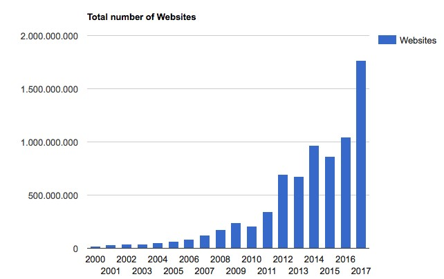

Does it still make sense to blog? So many companies are blogging these days. Do you still need to start it? You will never stand out among all those millions of blogs that are written every day.
1 – What, a website without a blog?
It is absolutely true that there is still a lot of content being added. There are more than 1.7 billion websites worldwide and that number is only increasing (although they are far from all active websites). According to Google, this now involves a staggering number of 130 trillion web pages , of which 1.6 billion are Dutch.
But why shouldn't you start a blog? Should you not do something because everyone else is already doing it? That would be a wrong starting point. (Why start a company at all, there are already so many companies…)
It is also a wrong thought. Because now that there are so many blogs, you are more likely to stand out in a negative way if you don't have a blog. What, a website without a blog???
If I now visit a company website and I don't see a blog, I consider that a loss. Not because I'm a blogging trainer, but because I'm just missing information. I can't really judge whether the person knows a lot about his field and I'm not surprised with a valuable tip.
The chance that I will become a customer is now a lot smaller. Especially if the competitor does have a blog. You simply cannot stay behind anymore.
2 – Many more searches per day
There may be many more blogs added, but there are also many more searches than before. Google does not reveal its figures in detail, but the assumption is that the number of searches is at least twice as high as five years ago.
We are talking about 2 trillion searches per month, or 63,000 per second. Insane numbers that you can immediately forget, because they are of no use to you. As long as you remember that the number of Google searches continues to increase
Apparently people are still not information-tired. On the contrary.
One of the reasons for the enormous increase is of course the rise of the smartphone . It is becoming easier to read content wherever you are. On the road, on the train or in the toilet during that far too boring birthday party.
With a good blog you can also stand out.
3 – Scoring in Google becomes easier
OK, that may be a bit of an overly bold statement. But I dare say that scoring in Google is becoming fairer. And that as an honest blogger you have a better chance.
I'll explain that.
Since its inception, Google has been working on making the match between search query and search results as fair as possible. And that is nice as a Google consumer.<
Google wants the best pages to surface when someone searches or wants to know something, not the one who uses the best tricks.
It is an eternal cat-and-mouse game between people who try to circumvent Google's rules and Google who therefore adjusts its rules again (and punishes the abusers).
Google is getting smarter about this and is using more and more artificial intelligence to assess the results. This means that Google robots are starting to think more and more like humans. And that improves the results.
Helpful Content Update
And that is especially now that Google has rolled out an important update that will also apply to the Netherlands in 2023: the Helpful Content Update . Google says that they will now pay even more attention to the content of articles (and therefore also blogs). The people are central ('people first') and not Google robots.
My expectation is that honest, valuable content will score even better now than in the past. And that's a good thing.
Anyone who focuses on writing valuable content in 2024 (and I mean really valuable content, not the umpteenth few tips or ways that everyone already mentions) may score more easily and thus earn a prominent place in the Google results.Even if you're just starting now.
That's good news for anyone who doesn't fancy Google tricks but just has a good story to tell. Although it does help if you know how to best write that story. You have to continue to give fate a helping hand.
And you really don't have to blog often to be successful. With an hour a week you can easily reach tens of thousands of new visitors per year.
4 – Blogging remains valuable to yourself
What was true before this year will of course still be true in 2024: blogging is also good for yourself. Blogging makes you smarter and more communicative .
By blogging you force yourself to think about your field. It sharpens your mind and you come up with new ideas and insights more quickly. By blogging you not only help others, but also yourself and your company.
It also makes you more communicative because you learn to express your business well. If you find yourself in a conversation with a potential customer, it will be much easier to explain what you do and what your added value is for that person.